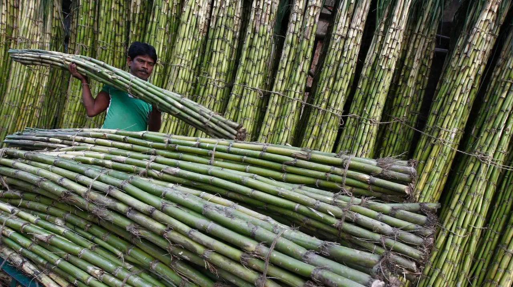

It is a tropical plant and needs at least 150 cm of rainfall each year or access to irrigation.
India has been actively promoting the use of sugarcane-based ethanol as an alternative fuel source. However, water scarcity is indeed a significant concern in many parts of India, and the cultivation of water-intensive crops like sugarcane can exacerbate this issue.

Sugarcane requires a substantial amount of water for cultivation, and the process of extracting ethanol from sugarcane also involves water-intensive steps. The cultivation of sugarcane in water-stressed regions can contribute to the depletion of groundwater levels and put additional pressure on already scarce water resources.
To address this concern, there is a need for sustainable water management practices in the cultivation of sugarcane and the production of ethanol. This could include the adoption of efficient irrigation techniques, rainwater harvesting, and the promotion of drought-resistant varieties of sugarcane.
It's important to note that policies and practices related to ethanol production and water management may evolve, and new initiatives could be introduced to mitigate the impact of water scarcity. For the latest and most accurate information, it's recommended to check with reliable and up-to-date sources or news updates from relevant authorities in India.
To know more about it:
click here to read article by Supriya Vohra on QUARTZ